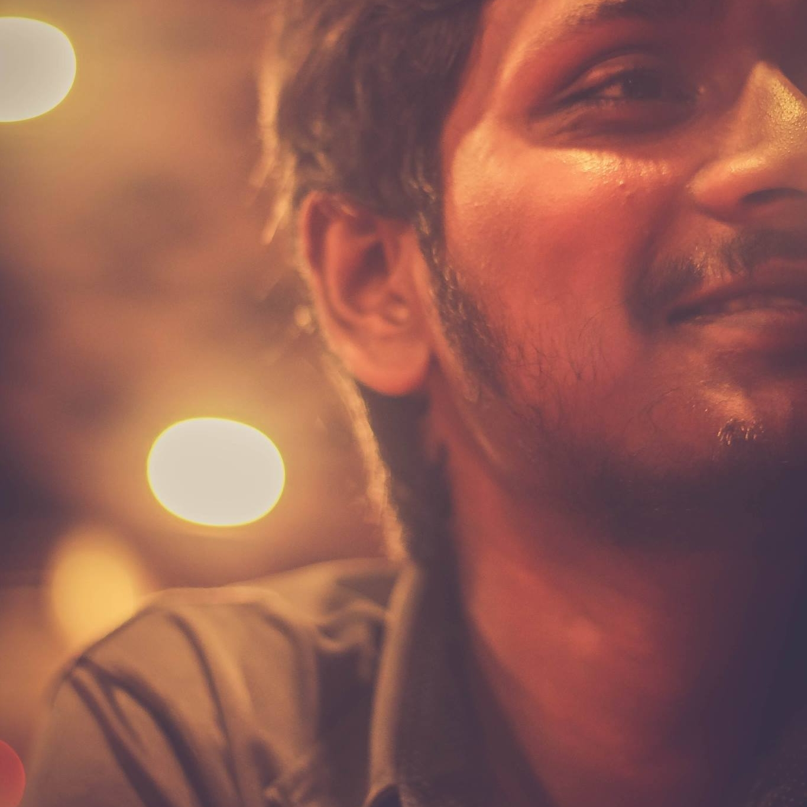

My Research interest broadly lies in Artificial Intelligence, Machine Learning, Deep Learning & Computer Vision.
I love listening to psychedelic rock songs while writing codes. During my free time, I like to travel and play video games.

I was born in Narail, Bangladesh on 18th December, 1997. I spent most of my teenage life in Narail. I started going to school from a very young age of 5 years. I had a very keen and curious mind from that age. It was soon after that I found out my love for mathematics and logical reasoning. I learned how to play chess, how to solve the rubik’s cube and tried to find out more challenging problems. In 2006 I passed my primary school and got the government scholarship for great performance. I was ranked 5th in Jessore Board. Soon after that I joined Narail Government High School. I have a lot of great memories and achievements associated with my high school. I obtained another government scholarship in 2009 for meritorious performance and another one in 2012 for obtaining Golden GPA 5.00. After that I got myself admitted in Narail Government Victoria College. Throughout my college life I was involved with debate and some other co curricular activities where I performed really well and achieved some recognition. I got another government scholarship for great performance in my HSC examination where I obtained Golden GPA 5.00, the highest attainable GPA. After that I had to compete to get into a university. I got admitted to the University of Dhaka, which had an acceptance rate of only 3% and started studying CSE. During my undergraduate life I focused on problem solving and improving my programming skills. It was my final year when I got my eye on researching. My undergraduate supervisor M. M. Islam guided us to see the beauty that was research. We spent a lot of time going through different papers and different projects gathering ideas and thinking of our own unique projects. I finally found what interests me the most. I started working on different Machine Learning projects and data analysis projects. Working with large scale data gave me the most satisfaction and I started looking for more complex data. The most satisfaction I got was while working on several face and object detection projects. After graduating I joined Robi Axiata Ltd. as a Data engineer and finally got to work with real world large scale datasets. After that I joined Bangladesh Bank, the central Bank of Bangladesh as a Data engineer where I worked with time series transactional data.